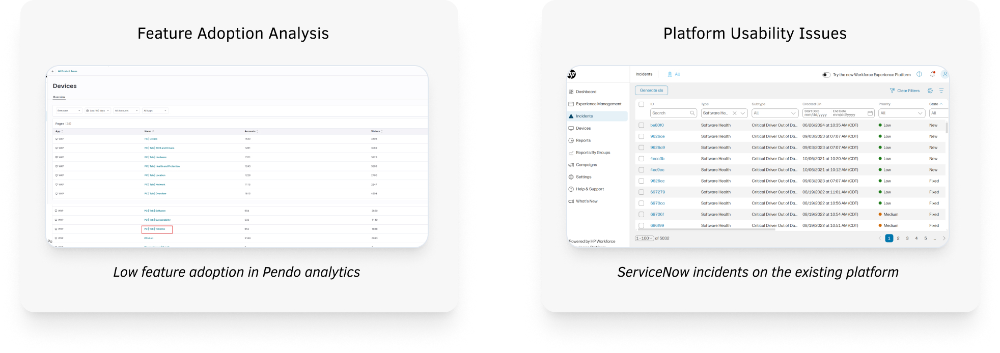
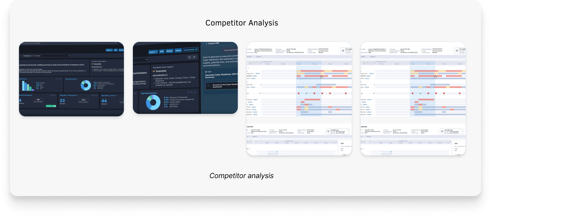
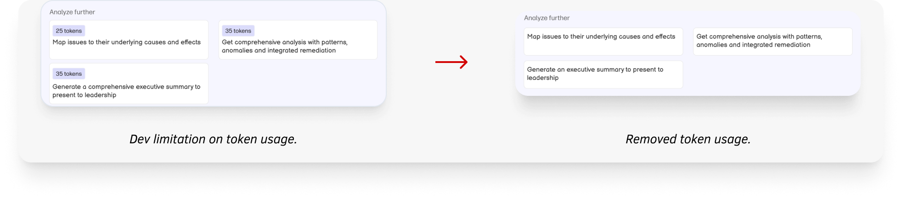
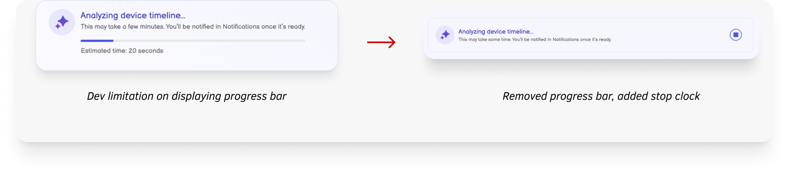
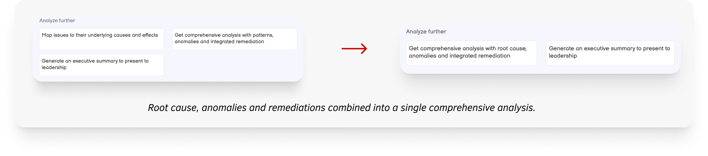
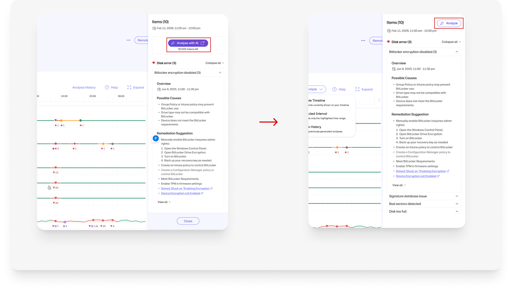

AI in Device Timeline
Importance of This Project
This project is focused on introducing AI-driven analysis into one of the highest-traffic areas of the platform (PC details page) making it a critical addition to the overall user experience. It was my first opportunity to work on an AI-first feature, where I not only designed for AI capabilities but also leveraged AI extensively throughout my own workflow. The need for this feature was strongly driven by consistent customer demand for faster and more intelligent troubleshooting.
About the Feature
This feature adds AI-powered analysis to the device timeline, helping IT admins quickly understand what’s happening on a device without going through long lists of events. As device data grows, it becomes harder to spot issues. This feature highlights the most important events, patterns, and anomalies while filtering out unnecessary noise. It helps users quickly identify possible root causes and understand device health at any point in time, making troubleshooting faster and easier.
Team
- Product managers
- Product designer (me)
- Engineering Team (8)
My Role
As the product designer for this feature, I was responsible for understanding requirements, exploring ideas, and shaping the overall user experience from start to finish. I conducted UX research, created low-fidelity wireframes, and iterated on designs through regular feedback with stakeholders. I then translated these into high-fidelity designs and defined AI interaction patterns for the feature. Throughout the process, I worked closely with AI engineers and product managers to ensure the solution was both user-friendly and technically feasible.
Challenges
- No dedicated UX researcher or UX writer on the team. Had to independently run research and usability testing
- Worked with a globally distributed team across time zones that required extra coordination for alignment and communication
Success Metrics
- Increase device timeline feature adoption from 42% to 65% within one quarter post-launch
- Achieve a 30–40% increase in issue remediations performed using AI-driven insights
- Reduce time from issue identification to remediation by 35%, improving operational efficiency
- Improve issue resolution success rate from ~70% to 90% using AI-assisted troubleshooting
User Research/Explorations
I took the initiative to conduct my own research using the resources available to me-
- Pendo analytics: Low usage of the device timeline feature, showing that users find it hard to understand or get value from it
- Support ticket analysis (ServiceNow): High number of tickets related to device issues, with many problems being identified late
- Pendo user feedback: Users said troubleshooting takes too long because they have to manually go through multiple events to understand what happened
- Pendo user feedback: Users said troubleshooting takes too long because they have to manually go through multiple events to understand what happened
- Direct customer feedback:
- Deloitte: “We spend too much time going through timelines to figure out the root cause.”
- Tesla: “There’s a lot of data, but it’s not clear what’s important or what to do next.”
- Companies like 1E, Tanium, and Nexthink already provide AI-based insights, so users expect similar capabilities


Pain Points
I figured the core pain points of IT admins through my own explorations and conversations with the PMs-
- Important events, anomalies, and key turning points are buried in noisy timelines
- The timeline shows what happened, but not why it matters or how events are connected
- Identifying root causes requires manual effort across multiple events and timestamps
- Information on the least isn't available to them to prioritize their remediation
- Users have to scan and mentally connect large volumes of raw data to understand issues
- High-frequency event data makes timelines overwhelming and hard to quickly interpret
Solutions
Considering all the pain points and explorations, I suggested the following assumptions as a solution-
- Introduce an AI-powered feature that analyzes and correlates events within a selected time range to provide a quick summary of device health
- Enable users to generate deeper insights, including event correlations, root cause analysis, anomalies, trends, and recommended troubleshooting steps
- Allow users to take action directly by triggering AI-recommended remediations using existing scripts, policies, and workflows within the platform
- Provide an option to generate a clear, executive-level summary highlighting issue impact, severity, and resolution for stakeholder communication
Brainstorming
I led several brainstorming sessions with stakeholders to explore how AI could simplify the device timeline experience and make troubleshooting more efficient. I used Figma Make and conducted competitor analysis to gather inspiration. I explored multiple concepts, iterated on them, and regularly shared designs with stakeholders to align on the best direction.
Wireframes
I made several iterations based on continuous feedback from the product managers, engineering team, UX writer and the visual designer and using the following AI principles:
Clearly communicate what the AI can and cannot do
Make it easy for users to trigger AI actions when needed
Use progressive disclosure to present insights without overwhelming users
Provide actionable insights that help users take immediate next steps
Build trust by explaining why an insight was generated (e.g., linking it to specific events and timestamps)
Allow users to give feedback on AI responses to continuously improve accuracy
Enable quick and easy dismissal of AI outputs when they’re not relevant
Feedback from Stakeholders
By Engineering Team
- Token usage can’t be calculated or shown before running an AI action

- AI processing time is unpredictable, so we can’t show a reliable progress bar or estimated time

By Product Manager
- Combine patterns, anomalies, and root cause analysis into a single, unified view instead of separate sections

- The “Analyze” button draws too much attention and needs to be less prominent

- Allow users to expand the time range of the analysis when the root cause is not clearly identified.
High-fidelity Flow
Outcomes
The feature delivered exceptional results within its first month of deployment:
- 35% faster root cause identification
- 40% reduction in troubleshooting time
- Reduced investigation steps from 6 to 2
- 18% reduction in IT support tickets
Future Improvements
- Add a chatbot so users can ask questions about device issues
- Allow users to use more tokens for deeper AI analysis
- Add a global AI button that can be accessed from anywhere in the platform
- Show insights using simple visuals like graphs and timelines
- Predict issues before they happen